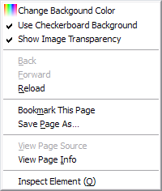

Standalone Image Background and Transparency
Change standalone image background and show transparency on Firefox.


Compatibility
Browsers
- Firefox 15+
- Pale Moon 15+
- SeaMonkey 2.12+
Extensions
- Greasemonkey 0.9.16+
- Scriptish 0.1+
Installations
Screenshots
PNG image


SVG image

{kind=link}
Configurations
To change image background settings, right click on the page.

Change background color
To change background color, select Change Background Color
on context menu
to open color setting dialog.

Please note that the color picker requires JavaScript to be enabled.
However,
you can still change background color by entering any valid
color value.
If you have NoScript
extension, color picker will work if you allow the site
from NoScript menu.

Toggle checkerboard background
To toggle checkerboard background, check/uncheck Use Checkerboard Background on context menu.
Toggle image transparency
To toggle image transparency, check/uncheck Show Image Transparency on context menu.
Limitations
URL schemes
By default, this script will not run on image on local disk. To enable it:
- Greasemonkey:
- Type
about:config?filter=fileIsGreaseablein Location Bar and press Enter. - Change extensions.greasemonkey.fileIsGreaseable value to true.
- Type
- Scriptish:
- Open Scriptish options.
- On Sciptish options dialog, select Advanced tab.
- Turn on file protocol (Local files) in Additional protocols.
{kind=link}
The script will not run on about: and chrome: schemes (e.g. about:logo, chrome://greasemonkey/skin/icon32.png) with Greasemonkey (see Greaseable schemes). But with Scriptish, you can enable it by repeating step 1 and 2 above, then turn on about protocol and chrome protocol in Additional protocols option.
SVG images
SVG images works with Greasemonkey but not with Scriptish. Context menu to configure background color, however, doesn't work on SVG images.